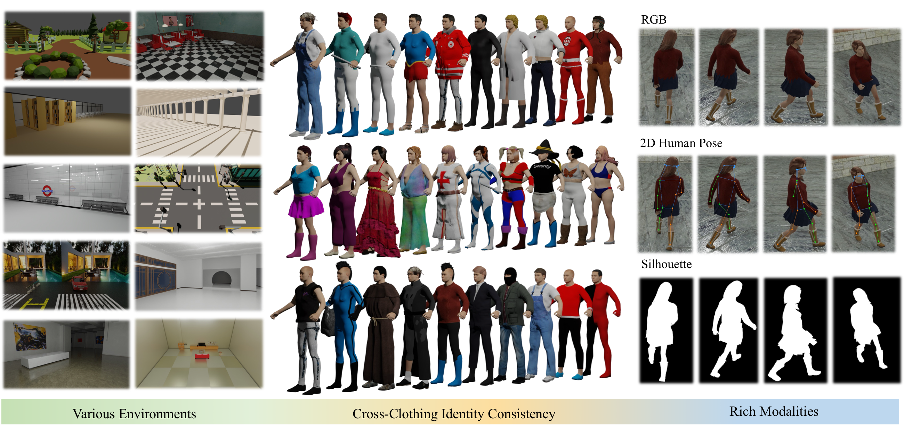
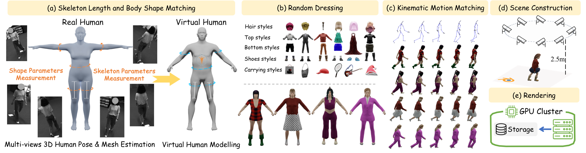
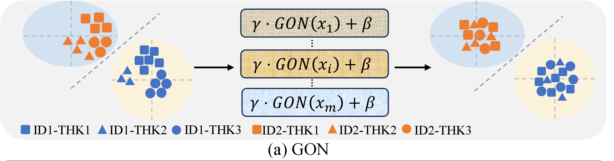
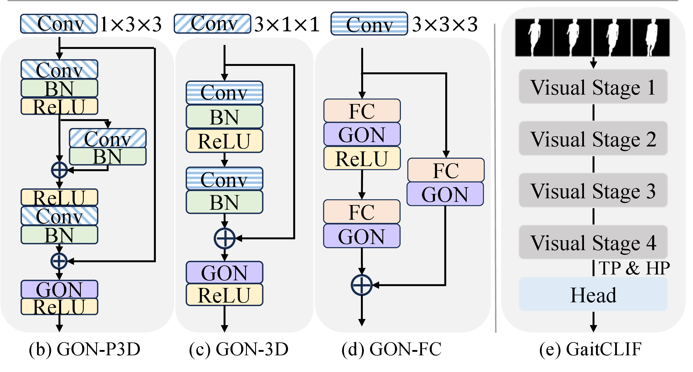
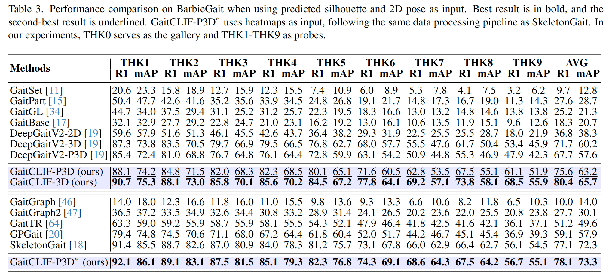
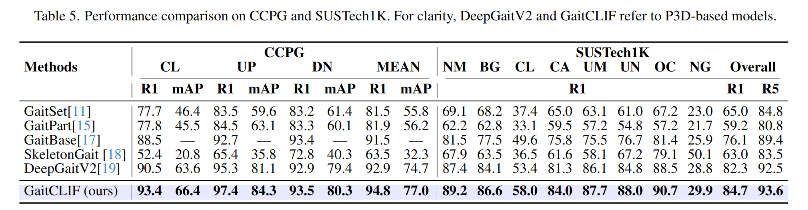
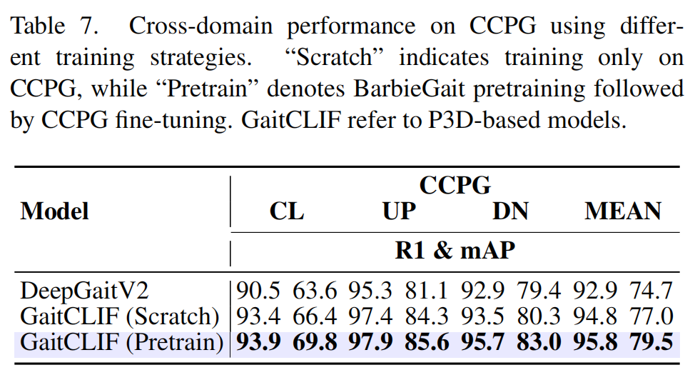
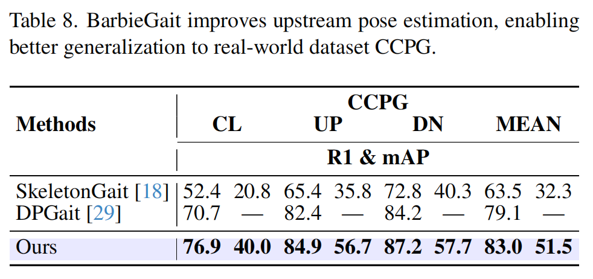

*Corresponding author

Gait recognition, as a reliable biometric technology, has seen rapid development in recent years while it faces significant challenges caused by diverse clothing styles in the real world. This paper introduces BarbieGait, a synthetic gait dataset where real-world subjects are uniquely mapped into a virtual engine to simulate extensive clothing changes while preserving their gait identity information. As a pioneering work, BarbieGait provides a controllable gait data generation method, enabling the production of large datasets to validate cross-clothing issues that are difficult to verify with real-world data. However, the diversity of clothing increases intra-class variance and makes one of the biggest challenges to learning cloth-invariant features under varying clothing conditions. Therefore, we propose GaitCLIF (Gait-oriented CLoth-Invariant Feature) as a robust baseline model for cross-clothing gait recognition. Through extensive experiments, we validate that our method significantly improves cross-clothing performance on BarbieGait and the existing popular gait benchmarks. We believe that BarbieGait, with its extensive cross-clothing gait data, will further advance the capabilities of gait recognition in cross-clothing scenarios and promote progress in related research.
A large-scale identity-preserving gait dataset with controllable clothing variations.
A unified model for robust gait representation learning under appearance changes.
A comprehensive evaluation framework for cross-clothing gait recognition, demonstrating consistent improvements and strong generalization.







@article{cai2026barbiegait,
title={BarbieGait: An Identity-Consistent Synthetic Human Dataset with Versatile Cloth-Changing for Gait Recognition},
author={Cai, Qingyuan and Hou, Saihui and Hu, Xuecai and Huang, Yongzhen},
journal={arXiv preprint arXiv:2604.12221},
year={2026}
}